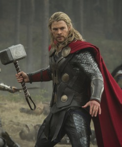

"ЖЕЛЕЗНЫЙ ЧЕЛОВЕК"
Тони Старк – сын богатого промышленника и изобретателя Говарда Старка. Его родители погибли в автокатастрофе, когда Тони был 21 год. Унаследовав компанию отца «Старк Индастриз», он вывел ее в лидеры по производству оружия. Когда Тони Старк приехал в Афганистан, чтобы лично присутствовать на тестовых испытаниях, его отряд подвергся атаке террористов, и раненый шрапнелью миллиардер попал в плен к оружейному барону Вонг-Чу. Глава террористов обещал оставить Старка в живых, если тот изготовит для него оружие массового поражения. Тони согласился на сделку в надежде выиграть время и получить доступ к необходимым материалам. В работе ему помогал другой пленный учёный, известный азиатский физик и лауреат Нобелевской премии профессор Хо Инсен, чьи работы вдохновляли Старка в колледже. Вместе они создали боевой костюм с генератором магнитного поля, который защищал сердце раненого Старка. С помощью костюма Тони удалось сбежать из плена, в то время как Хо Инсен пожертвовал собой, выиграв для него время. Вернувшись домой, Тони Старк занялся усовершенствованием костюма и магнитного генератора, от которого полностью зависела его жизнь. По этическим соображениям Тони прекратил заниматься производством оружия и сосредоточил деятельность компании «Старк Индастриз» на создании новых технологий, которые служат на благо человечества. Он создал множество благотворительных фондов, и, чувствуя все большую ответственность перед миром, решил раскрыть тайну своей личности и признаться, что он и есть Железный Человек. Тони Старк прекрасно знает себе цену: он одновременно является и спонсором Мстителей, и одним из важнейших участников команды. Он кажется самовлюблённым и постоянно нарушает правила, но он делает это ради достижения своей главной цели – спасения жизни людей. Созданный Тони Старком высокотехнологичный костюм Железного Человека многократно увеличивает человеческие характеристики. В костюме Железного Человека Тони Старк способен поднимать до 90 тонн, броня защищает его от ножевых и пулевых ранений. Встроенное вооружение костюма состоит из многочисленных пушек, лазеров и ракет, а репульсоры в ботинках и перчатках позволяют Железному Человеку летать. В костюм также встроена встроена операционная система, напоминающая искусственный интеллект, с помощью которого, Тони может связаться со спутниками или штабом Мстителей. Тони Старк разработал множество моделей своего костюма для разных целей. Так, например, один из них полностью предназначен для стелс-операций, а другой позволяет передвигаться в открытом космосе.">"КАПИТАН АМЕРИКА"
Во время Второй мировой войны юный Стивен Роджерс согласился на участие в сверхсекретной экспериментальной программе по созданию суперсолдат, которая превратила его в непобедимого Капитана Америка – живой символ свободы. Проведя много лет замороженным во льдах, легендарный герой вновь очнулся, чтобы продолжить битву за справедливость. Стивен Роджерс с детства отличался хрупким телосложением и слабым здоровьем, поэтому его упорные попытки попасть в армию в начале войны не увенчались успехом. Однако они не остались незамеченными, и Роджерс стал участником секретной операции «Возрождение» – проекта по созданию суперсолдат с помощью сыворотки, которая доводит физические способности человека до пика. Профессор Авраам Эрскин, разработавший сыворотку, увидел в маленьком худом Стиве исключительные качества – отвагу, чувство долга, способность к самопожертвованию, и выбрал его для первого эксперимента. После инъекций сыворотки Стив Роджерс подвергся воздействию вита-лучей, которые активировали и стабилизировали вещество в его организме. Во время эксперимента в лабораторию проник нацистский агент, который убил профессора Эрскина, а вместе с ним и возможность воссоздать формулу сыворотки. Стив Роджерс стал агентом контрразведки и символом борьбы против нацистской Германии. Он получил красно-бело-синий костюм, созданный по его собственным эскизам, и кодовое имя – Капитан Америка. Стив и его верные союзники спасли множество жизней, обезвредили немало злодеев и сумели изменить ход войны. Во время своей последней военной миссии Капитан Америка пропал в ледяных водах Северной Атлантики и после долгих безуспешных поисков был объявлен погибшим. Тело Стива Роджерса было обнаружено во льдах спустя много лет –герой все это время находился в состоянии анабиоза. Капитан Америка чувствует себя потерянным в современном мире, но его сила и лидерские качества помогают ему быть живой легендой, символом чести, доблести и мужества и стоять во главе команды могучих Мстителей. Сыворотка многократно усилила его физические характеристики и личные качества, наделив Капитана Америка развитым интеллектом, силой, ловкостью и выносливостью. Его единственным оружием стал щит в форме диска, сделанный из сверхпрочного сплава стали и вибраниума. Капитан Америка отличается непоколебимым характером и силой духа. ">"ТОР"
 Тор — дитя союза Одина, владыки Асгарда, и Геи, богини Мидгарда (Земли). Тор появился на свет в одной из норвежских пещер, откуда Один забрал его на воспитание в Асгард. Тор провёл детство со своим приёмным братом Локи, который постоянно ему завидовал и, в конце концов, вздумал убить брата. Так началась их многовековая вражда. Когда Тору исполнилось восемь, Один сделал для него Мьёльнир — молот, наделённый невероятной магической силой. Однако право обладать им Тор должен был заслужить, и только спустя годы упорных тренировок и славных подвигов он доказал, что достоин этой великой чести и был провозглашён великим воином Асгарда. Почти безграничные возможности не могли не повлиять на характер Тора. Его высокомерие и упрямство чуть не стали причиной войны с ледяными великанами, которая подвергла бы Асгард величайшей опасности. В наказание за этот проступок Один изгнал сына на Землю, лишив его божественной силы. Когда Тор осознал свои ошибки и в очередной раз доказал своё право носить Мьёльнир, Один разрешил ему вернуться домой. Однако Тор решил остаться на Земле, потому что чувствовал невероятную тягу к людям. Теперь, заполучив «двойное гражданство», Тор помогает людям на Земле и народу Асгарда, а также является одним из самых могущественных участников команды Мстителей. Сын двух могущественных богов, Тор обладает невероятной силой и выносливостью даже в сравнении с другими жителями Асгарда. Кроме того, Тор может управлять погодой и вызывать молнию. Мьёльнир только усиливает его возможности, делая его непобедимым противником. Молот всегда возвращается к Тору, враг не может им завладеть, ведь поднять Мьёльнир может только тот, кто достоин править Асгардом.">"ДОКТОР СТРЭНДЖ"
Попав в страшную автомобильную аварию, успешный нейрохирург Стивен Стрэндж повредил руки и потерял возможность оперировать. Традиционная медицина оказалась бессильна, и после долгих поисков и скитаний Стрэндж узнал о таинственном городе в Тибете, куда направился в поисках исцеления, и где обрёл учителя. Древняя – мастер магических искусств, открыла для Стрэнджа путь в мультивселенную и пространства, простирающиеся за пределами нашего измерения. Благодаря Древней, Стивен Стрэндж становится могущественным магом, учится черпать свою силу от мистических сущностей других измерений и использовать их энергию для создания заклятий. В распоряжении Стрэнджа множество мистических артефактов, например, Плащ Левитации, который дает ему возможность летать, Глаз Агамотто – амулет, в сердце которого один из Камней Бесконечности, способный управлять временем, и Книги Вишанти – сборник, в котором содержатся многочисленные магические заклинания и процедуры. Доктор Стрэндж также владеет боевыми навыками, может сражаться врукопашную и умеет обращаться с холодным оружием. После гибели своего учителя Доктор Стрэндж становится Верховным Магом, главная задача которого – защита человечества.">"ЧЕРНАЯ ПАНТЕРА"
![Т’Чалла — потомок древней королевской династии, которая много лет правит страной Вакандой, затерянной в африканских джунглях. Его отец, Т'Чака, был одним из самых выдающихся королей в истории Ваканды и первой Чёрной пантерой. Он смог обеспечить технологический прорыв своей стране, сделать её одной из самых развитых не только в регионе, но и во всём мире. Т’Чака первым начал разработку ценного вибраниума, вымышленного металла внеземного происхождения. Этот вибраниум и погубил Т’Чаку: пришли наёмники во главе с Улиссом Кло и попытались устроить государственный переворот. Т’Чака был убит, и лишь вмешательство ещё совсем молодого Т’Чаллы помогло остановить захватчиков и спасти Ваканду. Так мальчик стал королём.
Многие решили, что теперь Ваканда станет лёгкой добычей, и Т’Чалле пришлось защищать свою страну от постоянных нападений. Молодой король мог полагаться только на себя — и в итоге он стал блестящим бойцом, унаследовав от отца мантию Чёрной пантеры. Применяя и свой талант к науке, он раз за разом отбивал нападения. Но Т’Чалла понял: постоянно обороняясь, Ваканда обречена в итоге рухнуть под напором завоевателей. Он отправился в Америку, где заручился поддержкой Мстителей и даже вошёл в эту команду.
Вернувшись в Ваканду, Т’Чалла вывел страну из изоляции, сделав её важной частью мировой политики. Позже он женился на Ороро Монро, более известной как Шторм, член команды Люди Икс. Некоторое время Чёрная пантера и Гроза были членами Фантастической Четвёрки, подменив Рида и Сьюзан Ричардс. В результате нападения сил Доктора Дума Т’Чалла впал в кому, и мантию Чёрной пантеры переняла его младшая сестра Шури. В пятом томе он вернётся.
Чуть позже Т’Чалла стал новым Человеком без страха по просьбе Сорвиголовы. В итоге он до сих пор защищает «Адскую Кухню» от мафий и прочих суперзлодеев.](img/hero2/black.jpg)
"ЧЕЛОВЕК МУРАВЕЙ"
Подающий надежды инженер и специалист в области электроники, Скотт Лэнг был осуждён за кражу и провел некоторое время в тюрьме. Освободившись, он решил завязать с криминальным прошлым ради своей дочери Кэсси, но из-за судимости не смог найти работу и был вынужден вернуться к воровству. По наводке друзей он вторгся в дом гениального инженера Хэнка Пима, но нашёл там только спроектированный учёным костюм Человека-Муравья, который позволяет его владельцу уменьшаться в размерах. Хэнк Пим обучил Скотта использовать костюм, чтобы обезвредить Даррена Кросса, который воспроизвёл технологию Пима по уменьшению материи и создал прототип аналогичного боевого костюма, который получил название Жёлтый Шершень. Скотт успешно справился со своей задачей, победив Кросса и уничтожив все его исследования, и, став настоящим героем, продолжил использовать костюм Человека-Муравья в благих целях, в том числе сражаясь в рядах команды «Мстители». Костюм Человека-Муравья позволяет Скотту уменьшаться в размерах, одновременно увеличивая силу в обратной пропорции. Специальный шлем обеспечивает ему телепатическую связь с муравьями и позволяет контролировать муравьиное воинство. Кроме того, Скотт обучился навыкам рукопашного боя у дочери Хэнка, Хоуп ван Дайн, которая впоследствии стала его напарницей, известной как Оса.">"ХАЛК"
Выдающиеся интеллектуальные способности Брюса начали проявляться в раннем возрасте и уже тогда заинтересовали военных. Получив докторскую степень по ядерной физике, доктор Бэннер приступил к работе на базе ядерных исследований Министерства Обороны США в Нью-Мехико. Во время первого испытания разработанной им гамма-бомбы Брюс Бэннер бросился на помощь подростку, пробравшемуся на экспериментальный полигон. Брюс успел откинуть подростка в защитную траншею, но сам оказался в зоне поражения и получил огромную дозу гамма-радиации. По неизвестной причине, скрытой в генах Бэннера, взрыв не причинил ему вреда, но спровоцировал в его организме изменения, из-за которых учёный начал превращаться в существо, обладающее сверхчеловеческой силой, — в огромного зелёного монстра Халка. Сначала Халк «просыпался» в теле Брюса каждую ночь, но со временем трансформации стали напрямую зависеть от всплеска адреналина в крови Брюса, вызванного гневом. Халк обладает безграничной мощью и выносливостью, которые напрямую зависят от его эмоционального состояния, — когда Халк злится, он становится сильнее. Благодаря сверхразвитой мускулатуре он может преодолевать огромные расстояния за один прыжок. Его тело способно выдержать любую атаку: Халку не страшны высокие температуры, ядерные взрывы и огнестрельное оружие. Он даже способен выжить в абсолютном вакууме. Его разум невозможно контролировать, а ткани организма восстанавливаются за считанные секунды. Это делает Халка одним из самых сильных существ на планете. Брюс Бэннер не способен полностью контролировать Халка, поэтому, опасаясь вреда, который может принести его альтер-эго, он старается вести уединённый образ жизни, избегая тех, кто может в своих интересах воспользоваться его силой. Однако, когда он нужен миру, он приходит на помощь и как ученый, и в качестве Халка, поэтому он играет важную роль в команде Мстителей. В отличие от своего альтер-эго, доктор Брюс Бэннер — гениальный учёный, чей интеллект невозможно измерить стандартными тестами. Он очень застенчив, замкнут в себе и не умеет строить отношения с людьми. На его характер очень сильно повлияла детская травма: его отец-алкоголик безумно ревновал жену к собственному сыну и жестоко избивал его. Во время очередной вспышки ярости он убил свою жену, после чего был отправлен в психиатрическую лечебницу. Маленького Брюса забрала к себе его тётя Сьюзан, которая окружила мальчика любовью и заботой и воспитала, как родного сына.">"СОКОЛ"
![Сэм вырос в жестком районе Гарлеме. Его отец, священник, был убит, пытаясь остановить драку. Сэм сделал всё возможное, чтобы поступать правильно, но когда его мать была убита грабителями два года спустя, горе и гнев Сэма поглотили его и в конечном счёте привели его на преступный путь. Он взял себе имя «Снэп» Уилсон и стал рэкетиром.
Самолёт, на котором Сэм летел в Рио-де-Жанейро, разбился на отдалённом острове Карибского моря, где скрывался Красный Череп и его приспешники. Красный Череп попытался использовать Уилсона в качестве пешки против Капитана Америки, который занимался поиском злодея на острове. Череп рассудил, что идеализм Уилсона мог бы обратиться к тому, чтобы стать партнёром Капитана Америки в борьбе с преступностью. Затем, на более позднем этапе, Череп сможет использовать Уилсона против своего врага. Он использовал Космический Куб, чтобы вернуть «Снэпа» в Сэма и дать Сэму способность телепатически общаться с птицами, особенно с птицей по имени Рэдвинг, которую Уилсон купил. Сэм помог Капитану Америке победить Черепа и в самом деле стал его партнёром, взяв имя Сокол.
Вернувшись в Нью-Йорке, Уилсон стал одним из самых верных борцов с преступностью в Гарлеме и регулярным союзником Капитана Америки. В своей обычной жизни он стал социальным работником и защищал улицы своего родного города как в костюме, так и без него. Уилсон на короткое время принял личность Капитана Америки, когда казалось, что тот был убит. Уилсон под маской Сокола был атлетом, передвигающимся по крышам, пока Чёрная пантера не предоставил ему технологии Ваканды, которые позволили ему по-настоящему летать.
Личность «Снэпа» оставалась затопленной, но несколько лет спустя он вспомнил о своём криминальном прошлом, когда проходил шоковую терапию в штаб-квартире Щ.И.Т.. Как только его бывшие преступные партнёры узнали об этом, они напали на него, но Уилсон и Капитан Америка отбили атаку.
На более позднем этапе Уилсону предложили членство в Мстителях, но он отказался и вернулся к своей социальной работе, но по случаю помогал Мстителям как временный член команды. Уилсон помог Мстителям в борьбе с Натиском и, казалось, принёс себя в жертву, чтобы остановить угрозу. На самом деле он был помещён в другое измерение и позже воссоединился с остальными Мстителями. Он вернулся к своей жизни, как социальный работник и по совместительству авантюрист. Помог Мстителям в реорганизации команды после короткого периода их роспуска.
Когда Мстителям был предоставлен специальный дипломатический статус Организацией Объединённых Наций, они также создали Особняк Мстителей как отдельное посольство с Генри Гайричем в качестве посла. Уилсона попросили вернуться в действующую армию Мстителей, в частности, чтобы он мог следить за Гайричем, который часто имел сомнительное отношение с Мстителями на протяжении долгих лет. Отношения Уилсона и Гайрича в конечном итоге переросли в уважительные, и вместе они помогли раскрыть заговор Красного Черепа с целью проникнуть в американское правительство.](img/hero2/sokol.png)
"ВИЖН"
![Вижен был создан злым роботом Альтроном для борьбы со своими создателями Хэнком Пимом и Джанет ван Дайн, являющихся членами Мстителей. Основой для Вижена послужили остатки оригинального Человека-факела, супергероя-андроида 1940-х годов. Живая машина была запрограммирована нейронными процессорами с моделью мозга, заряженного ионами супергероя Чудо-человека, также Вижену были имплантированы контролирующие кристаллы, чтобы держать его в повиновении.
Альтрон отправил Вижена против Мстителей, и это было во время первой его встречи с супергероиней Осой, которая придумала название синтезоид. Движимый Мстителями, Вижен предал свою программу и помог команде супергероев победить своего расчётливого создателя.
Вижен служил с Мстителями несколько лет, стоя с товарищами по команде против врагов. У андроида появились романтические отношения с героиней Алой Ведьмой, что превратилось в настоящую любовь и брак. Молодожёны оставили Особняк Мстителей, чтобы жить спокойной жизнью в Нью-Джерси.
Неисправность контролирующих кристаллов стала мешать способности Вижена рассуждать и он стал стремиться создать новый золотой век на Земле, захватив контроль над компьютерами и оборонными системами мира. В конечном итоге, Вижен вернулся к форме, разрывая свои подключения к банкам данных планеты и извлекая контролирующие кристаллы из механизированного ума. На волне кризиса народы Земли стали рассматривать его как высокий уровень угрозы безопасности. Правительственные оперативники похитили и демонтировали Вижена, стерев ему память. Алая Ведьма и Мстители вернули компоненты своего товарища по команде, а Хэнк Пим восстановил и перепрограммировал андроида. Учёный загрузил файлы из компьютера Мстителей в нейронные процессоры синтезоида, но Чудо-человек отказался дать новые элементы своего мозга. Таким образом, Вижен вернулся к существованию без человеческих эмоций, не в силах даже вспомнить свою любовь к жене.
Вижену со временем загрузили новый набор моделей мозга и он вновь приобретает способность чувствовать. Хотя он помнит своё время с Алой Ведьмой, он решил не пытаться мириться с ней. Желая испытать человеческие эмоции в полном объёме, синтезоид сделал усилия по изучению аспектов его личности отдельно от тех, которые запрограммировал ему Пим.
Когда Алая Ведьма потеряла контроль над своими силами и сошла с ума, убив многих из Мстителей, Вижен был разорван разъярённой Женщиной-Халк. Он не подлежал ремонту и поэтому был помещён в хранилище.
Вижен был восстановлен молодым супергероем Железным парнем, который стремился объединить команду Мстителей, чтобы помочь ему победить Канга, для чего он скачал программы Вижена в свою броню. Когда Железный парень оставил броню в попытке сбежать от Канга, Вижен ещё раз ожил и взял броню под свой контроль](img/hero2/vign.jpg)
"НИК ФЬЮРИ"
![Ник Фьюри — сын известного в Первую мировую войну пилота Джека Фьюри. После окончания средней школы Фьюри и его давний друг Рэд Хэгроув присоединились к Летающему Цирку Финли, путешествующему воздушному шоу. Оба друга стали первоклассными пилотами и каскадёрами. Когда Летающий Цирк Финли добрался до Англии в 1940 году, Фьюри и Хэгроув учили парашютизму лейтенанта Сэма Сойера, американского военнослужащего при британской армии. Некоторое время спустя, когда Сойеру поручили спасти британского шпиона в Голландии, он убедил Ника и Рэда сопровождать его. Их самолёт был сбит в Голландии, где они встретились с цирковым силачом Тимоти Дуганом, который присоединился к их спасательной миссии.
В конце концов все пятеро благополучно вернулись в Англию. Воодушевлённый приключением, Дуган вступил в Британскую Армию, а в начале 1941 года Фьюри и Хэгроув вернулись в Америку и поступили на службу армии США.
Фьюри и Хэгроув вскоре были направлены на Пёрл-Харбор на Гавайях, где Ник быстро дослужился до сержанта. 7 Декабря, 1941 года, Пёрл-Харбор был атакован японцами и во время боевых действий Хэгроув был убит. Когда Америка объявила войну Оси, Сойер, теперь уже капитан, был переведён в Рейнджеры США, где он должен был сформировать Первую Атакующую Команду — специальное военное подразделение, которое проходило особую подготовку.
Получив полную свободу в наборе членов команды, Сойер назначил полевым командиром Ника Фьюри. Другими рекрутами стали Даган, чёрный джазовый трубач Гейб Джонс, эксперт по механике Иззи Коэн, актёр Дино Манелли, Реб Рэлстон, который отлично крутил лассо и студент колледжа Джуниор Джунипер. Члены отряда стали почётными коммандос в Британской армии и получили кодовое название «The Howling Commandos» (с англ. — «Ревущие коммандос»).
На протяжении почти четырёх лет Фьюри находился в команде и участвовал во множестве боевых миссий. Ник побывал практически на всех фронтах Второй мировой.
Когда Джуниор был убит в самом начале одной из миссий, его заменили эксцентричным британским военнослужащим по имени Пинки Пинкертон. Позже в группу вступил немецкий перебежчик Эрик Кёниг.
Во время взрыва вражеской гранаты левый глаз Ника был серьёзно повреждён, за что Фьюри получил Пурпурное Сердце, однако покидать военную службу не собирался. Его команда сталкивалась со многими высокопоставленными немецкими офицерами, среди которых был и Барон Вольфганг фон Штрукер. Случайными (или просто непостоянными) союзниками группы «The Howling Commandos» были такие костюмированные искатели приключений, как Капитан Америка, Человек-факел и Нэмор. В какой-то момент Фьюри познакомился и вскоре сдружился с канадским солдатом по имени Логан, который являлся мутантом.
В начале войны, отделившись от группы во время миссии во Франции, Фьюри был серьёзно ранен от взрыва мины. Обнаруженный французскими партизанами, Ник был доставлен к одному из врачей, который находился ближе всех. Доктора звали профессор Бертольд Стернберг. Не вдаваясь в подробности лечения и не оповещая о них Фьюри, доктор не просто залечил глубокие раны, но также ввёл в организм так называемую «Формулу Инфинити», которая предназначалась для замедления и даже остановки процесса старения человека. Фьюри вернулся в своё подразделение неделю спустя, даже не подозревая о тех экспериментах, которым подверг его профессор Стернберг.
Некоторое время спустя после формирования «The Howling Commandos» поручили уничтожить смертельный луч, созданный Бароном Генрихом Земо. Однако в итоге Земо сам уничтожил луч, когда появилась опасность попадания смертоносного оружия в руки врага. Позже Барон Земо стал одним из главных врагов Капитана Америки.
В середине 1942 года, в то время находясь в Лондоне, Фьюри влюбился в Леди Памелу Хоули — британскую аристократку. В июле того же года группа Фьюри была направлена в Румынию и встретила там известного вампира, графа Дракулу, который доказал, что питает к нацистам отвращение уже по той причине, что они вообще есть. Как бы то ни было, вампир-нацист по имени Кровавый барон попытался захватить группу Фюьри, но его планы распались, когда американский военнослужащий предупредил его о том, что вампиры обернутся против Барона. В конце 1942 года особое подразделение было направлено в северную Африку, где они стали свидетелями мер, предпринимаемых лидером Пустынных Ястребов и его дочерью Шейлой, Капитаном Старром и т. д.
В 1943 году Фьюри и Даган спасли Памелу Хоули от немецкого колдуна Виконта Кроулера, неосознанно ввязываясь в столкновение демона Дормамму и будущего Верховного Волшебника Доктора Стрэнджа, который впоследствии удалил ненужные воспоминания у солдат.
«The Howling Commandos» снова столкнулись с магией недели спустя, когда их команда объединилась с вором-авантюристом по имени Жан Люк ЛеБо для того, чтобы помешать Барону Штрукеру заполучить волшебный камень Принцесса Мгновения, позволяющий путешествовать во времени.
В один из наиболее прозаических моментов Фьюри наконец решился сделать шаг навстречу Леди Хоули и предложил ей выйти за него замуж, но девушка трагически погибла во время очередной бомбардировки Лондона, которая началась как раз в то время, когда Памела помогала раненым.
Месяцы спустя, когда Фьюри находился дома в заслуженном отпуске, его брат Джейк, который завидовал известности Ника, был похищен нацистским полковником Клау. Нику удалось освободить брата, однако выбраться с вражеской территории так и не смог, попав в плен вместо Джейка. В свою очередь Джейк помог группе спасти Ника. После этих событий Джейк Фьюри был зачислен в армию, однако вскоре он пожалел о сделанном выборе и ещё больше возненавидел Ника.
В какой-то момент нацистский вдохновитель по имени Красный Череп проник на базу Фьюри с помощью удачной маскировки, но в конечном итоге его планы всё же были сорваны. В апреле 1944 года, отряд «The Howling Commandos» и их временные союзники, Капитан Америка и Баки вступили в борьбу с Черепом, чтобы спасти американского промышленника. Недели спустя «The Howling Commandos» преследовали Барона Штрукера до немецкой деревушки Грёнштадта, где они обнаружили, что Барон возглавляет нацистскую Команду СС, которая буквально вырезает мирное население. Переполненные гневом и отвращением, «The Howling Commandos» убили всех солдат Штрукера до последнего человека, однако самому нацистскому барону удалось бежать.
Фьюри не знал тогда, что Штрукер уничтожил Грёнштадт лишь для того, чтобы скрыть обнаруженную неподалеку часть Гнобианс — инопланетян, обладающих значительным количеством передовых технологий. После массовых убийств Штрукер мысленно связался с лидером Гнобианс, чтобы получить уникальные знания внеземной цивилизации, в то время как Гнобианс узнали о его двуличном характере.
6 июня 1944, больше известного под названием День Д, отряд Фьюри были в числе союзнической армии, которая освобождала Францию от нацистских захватчиков. В октябре они объединились с Капитаном Америкой и Баки для того, чтобы противостоять новым угрозам и помочь Верховному Волшебнику Древнему, в борьбе против альянса между Дормамму и Красным Черепом. В этот раз воспоминания о Дормамму также были удалены из памяти Фьюри и его коллег.
Возвращаясь на поля сражений более традиционной войны, Фьюри и Капитан Америка уничтожили один из боевых биохимических лагерей Черепа, освободив при этом из плена Майкла Крамера и других заключённых.
В 1945 году, отряд «The Howling Commandos» снова столкнулся с нечистью, когда столетний колдун Алгернон Кроу создал солдат-зомби для нацистских захватчиков. «The Howling Commandos» вступили в бой с зомби и после своей победы посчитали, что Кроу погиб.
Когда война наконец завершилась в августе 1945 года, Фьюри повёл «The Howling Commandos» на европейскую зачистку, в ходе которой они выискивали уцелевших боевиков. Именно в этот период «The Howling Commandos» прикрыли «лавочку смерти», которой являлась научная лаборатория Натаниэля Эссекса, также известного как Мистер Злыдень. Фьюри был переведён на Окинаву, Япония, чтобы провести такие же зачистки. Другие члены команды «The Howling Commandos» вернулись к гражданской жизни.
Вскоре после войны Фьюри был завербован ОСС на постоянную службу. Работая с агентами британского МИ-5, он был послан за Полковником Ишии — отщепенцем японской науки, который владел разработками биологического оружия. Фьюри удалось захватить Ишию, однако он стал единственным уцелевшим в этой миссии.
В 1946 году Фьюри в возрасте шестидесяти лет ожидал свою смерть с минуты на минуту, из-за последствий воздействия Формулы Вечности профессора Стренберга. Ожидая этого года, Стренберг тут же отправил Нику Фьюри усовершенствованный вариант препарата, и Фьюри незамедлительно ввёл его себе, возвращая тем самым свою молодость.
Как бы то ни было, эффект новой формулы действовал лишь один год и по истечению этого срока Стренберг стал вымогать у Фьюри деньги за постоянные поставки сыворотки. Не узнавая местонахождение профессора, Фьюри подготовил необходимую сумму и без лишних разговоров выкупил формулу на несколько десятилетий вперёд.
В 1947 году ОСС был расформирован и Фьюри поступил на службу в военной разведке. В конечном итоге он стал свидетелем войны в Корее в 1950 году, и когда возникла необходимость, Ник снова создал «The Howling Commandos», которым поручили специальную миссию, в ходе которой нужно было взорвать ракетную базу в тылу врага. По завершении этой миссии Фьюри был повышен в звании до второго лейтенанта и вскоре был переведён в Центральное разведывательное управление. В этом качестве он возглавлял подразделение, известное как группа «Валькирия», вплоть до окончания войны в 1953 году.
В период с конца 50-х и начала 60-х Фьюри работал с супер-командой под названием «Первая Линия», и был впечатлён их лидером, Янки Клипером.
К 1963 году Фьюри уже был полковником ЦРУ, и стоял во главе программы, включающей в себя боевиков с телепатическими способностями, одна из которых, Тереза Беллвеза, была убита в ходе операции под названием «Проект: О лице».
Судьба программы Фьюри неизвестна, но к 1967 году он принимал активное участие в войне во Вьетнаме, где он снова сформировал особое подразделение «The Howling Commandos». Годы спустя он прошёл подготовку в войсках специального назначения «Зелёные береты». Затем подготовку он продолжил в «Чёрных Беретах» в 1973 году. Мало что известно о том периоде, в течение которого Фьюри работал на ЦРУ, однако можно с уверенностью сказать, что он часто работал со своим товарищем времён Второй мировой войны, которого звали Логан — в то время он работал на канадскую разведку. Таланты Фьюри в разработке тактики и стратегий снискали ему множество недругов, в числе которых находится и смертоносный интеллект Спука.
В начале 1980-х годов Фьюри вместе с реорганизованной «Первой Линией» способствовал борьбе против подземных захватчиков. После своего доклада Ник был рекомендован в проект Щ. И. Т., правительственную организацию. Позднее Фьюри тайно направился в Макао для расследования дела Амбер Д’Алексис, которая занималась шпионажем и контрабандой оружия через сеть своих казино. Фьюри завёл роман с Д’Алексис, чтобы заручиться её доверием и разузнать подробности дела. В итоге Ник узнал о романтических отношениях Амбер с его братом Джейком, который в то время был исследователем в биофизике. В итоге Фьюри взял Д’Алексис под стражу, чем превратил давнюю обиду Джейка в настоящую ненависть.
Несколько лет спустя Фьюри опять сформировал «The Howling Commandos», по крайней мере для одной миссии с Беном Гриммом. За тот же период времени Ник работал с двумя блестящими учеными, Ридом Ричардсом и Тони Старком. Фьюри не знал, что они оба были вовлечены в Щ. И. Т., а Джейк Фьюри вскоре стал работать на Старка.
В последние годы, вскоре после дебюта Фантастической Четвёрки, Ник Фьюри помогал команде героев в борьбе против подрывника Хэйт-Монгера. На протяжении этой миссии Фьюри было поручено расследование дела о шпионаже в Старк Индастриз, в то время как Ник был не оповещён о том, что Старк сам принимал участие в подразделении международного шпионажа, известного как Щ. И. Т., чей директор, Полковник Рик Стонер, был недавно убит высокотехнологичной террористической группировкой Гидра. Фьюри был разочарован результатами расследования, так как шпионом оказался его брат Джейк, который перешёл на сторону Гидры.
Во время конфронтации со своим братом Фьюри получил пулю в левый глаз, что усугубило старую травму, оставшуюся с первой войны. Несмотря на то, что его деятельность была разоблачена, Джейк сумел сбежать, а Ник, чей глаз теперь не подлежал восстановлению, стал носить чёрную повязку. Вскоре после этой истории, Фьюри был направлен на миссию в России, где он снова был в одной команде с Логаном, который на тот момент был канадским супер-агентом по прозвищу Росомаха.
Вернувшись в Америку, по рекомендациям Старка, Фьюри был приглашён на руководствующий пост в Щ. И. Т., который терпел новые нападения от Гидры. Фьюри сомневался в своих способностях, но всё же согласился на новую роль, при этом взяв на работу Дум-Дум Дугана, который стал вторым в команде, а также Гейба Джонсона и Эрика Кенинга. Фьюри направил Щ. И. Т. против Гидры, AIM, Друида и других террористов. Чтобы не рисковать лишний раз жизнями своих работников, Фьюри зачастую действовал сам, таким образом оставаясь полевым агентом.
Правой рукой Ника был человек по имени Джаспер Ситвелл, лояльный администратор, чья приверженность к следованию правилам раздражала Фьюри даже несмотря на то, что все они основывались на его собственных словах.
Во время ранних столкновений с Гидрой Фьюри влюбился в Лауру Браун — дочь предполагаемого лидера террористической организации. Когда глава был убит, Фьюри посчитал, что Гидра доживает свои последние дни, однако это оказалось ошибкой. Вместо одной отрезанной руки в любой момент была готова вырасти другая. Когда отношения с Лаурой завершились, Фьюри закрутил роман с агентом Контесса Валентина де Фонтейн.
Через месяцы после присоединения к Щ. И. Т. Фьюри снова встретился со своим старым боевым другом, Капитаном Америкой. По иронии судьбы Фьюри столкнулся с ещё одним своим давним знакомым. Стало известно, что Гидру, созданную в последние дни Второй мировой войны, тайно возглавлял не кто иной, как Барон Штрукер. Он вместе со своей организацией шантажировал мир возможным взрывом бомбы. Фьюри узнал расположение бомб и основной базы Барона, что позволило Щ. И. Т. накрыть остров, на котором и находилась база, куполом. По всей видимости, Штрукер и его люди погибли от собственного оружия.
После этого Фьюри едва не сошёл с ума, став пешкой в игре диктатора Латверии, Доктора Дума, и его роботом-оппонентом. В ходе игры, произошло столкновение Щ. И. Т. с роботом.
Другие враги появились, когда Джейк Фьюри, уполномоченный загадочным Ключом Зодиака, напал на Щ. И. Т. в качестве злодея по имени Скорпио. Разоблаченный, Скорпио вступил в схватку с Ником Фьюри. В этой битве Ник одержал победу, фактически убив Скорпио, однако сознание злодея выжило в андроидном теле. После финальной битвы, Фьюри хотел уйти в отпуск, однако известие об убийстве профессора Стернберга помешало его планам. Убийцей учёного был преступник по имени Стальной Харрис, который пытался продолжить дело профессора и шантажировать Фьюри с целью получения денег за формулу. Но в этот раз Ник не пошёл на сделку и с помощью де ла Фонтейн одолел Стального Харриса, забрав секретную формулу и использовав её для себя.
В качестве директора Щ. И. Т. Фьюри боролся с различными врагами Нью-Йорка, которые обладали суперспособностями, делая свою работу вместе с супергероями, со многими из которых Ник имел неплохие отношения. Когда Существо и Мстители организовали плавающий покер, Фьюри стал постоянным участником, при этом возобновив дружбу с Росомахой, который теперь был членом команды Люди Икс. Несмотря на своё уважение к супергероям и даже дружбу, Фьюри признавал их потенциальную угрозу, и Щ. И. Т. формирует несколько стратегических планов на случай непредвиденных обстоятельств, связанных с поведением сверхлюдей.
На протяжении многих лет Фьюри приходилось находить компромисс между своими прямыми обязанностями и дружескими отношениями, что не всегда оканчивалось его удовлетворением результатом.
Вскоре Фьюри стал беспокоиться также и из-за коррупции в организации, что привело его к работе с экс-агентом Пересмешником для раскрытия нескольких криминальных историй.
Целью Фьюри стала организация «Сентябрь», которая атаковала воздушную базу Щ. И. Т., свергла правительство небольшой латиноамериканской страны, напала на Фьюри и его людей в Египте. Группировка была замечена в Гонг Конге, где Ник разоблачил их лидера, чье настоящее имя было Жёлтый Коготь.](img/hero2/nic.jpg)
"АЛАЯ ВЕДЬМА"
![Ванда Максимофф (Wanda Maximoff) - мутант, обладающая способностью изменять вероятности. Она дочь Магнето и его покойной жены Магды (Magda). Также у неё есть брат-близнец, Пьетро (Pietro), больше известный всем как Ртуть (Quicksilver); она старшая в семье. Вскоре после того, как Магда поняла, что беременна, она стала свидетельницей того, как Магнето использовал свои способности магнетизма, и поняла, что он мутант. Магда боялась мутантов, поэтому не рассказала Магнето о том, что была беременна; более того, она сбежала при первой возможности. В конце концов, она очутилась на горе Вундагор (Wundagore), где её приютила корова-гуманоид по имени Бова (Bova). Близнецы были рождены именно там, поэтому именно мистические энергии Вундагора даровали Ванде её магические способности, наряду с силами мутанта. Через некоторое время после их рождения Магда сошла с ума, уверенная, что Магнето найдет их. Несмотря на все доводы со стороны Бовы, Магда сбежала в снежную бурю, оставив близнецов. Считается, что там она и погибла.
Заботиться о близнецах было некому, поэтому их воспитанием занялась Бова. Однако её помощь понадобилась также и героине Второй Мировой Войны Мисс Америке (Miss America), которая, находившись на Вундагоре, родила там сына от своего мужа, Юлы (Whizzler). К сожалению, она, как и ребенок, вскоре умерли от радиационного облучения. Когда её муж прибыл на Вундагор, Бова решила отдать ему близнецов, заявив, что это его дети. Герой с радостью принял их, но также быстро отправил их назад, когда понял, что это не его дети.
Бова, в конечном итоге, нашла близнецам родителей – Джанго и Марию Максимофф (Django and Marya Maximoff), которые недавно потеряли своих родных детей. Они были цыганами, что затрудняло их жизнь в Трансии (Transia). Джанго мастерил кукол, но ему трудно было найти клиентов. Из-за этого вскоре ему пришлось начать красть еду, чтобы его семья не умерла с голоду. Когда Ванда стала старше, она подверглась сексуальному насилию со стороны мальчика её возраста, и вынуждена была использовать свои способности, чтобы держать его подальше от себя, прежде чем побежать домой. Сельчане, напротив, решили, что Ванда соблазнила парня и напали на их семью, поджигая их фургон. Мария была в тот момент внутри и сгорела заживо. Джанго же забили дубинками, однако близнецам удалось бежать. Теперь они жили сами по себе, причем Пьетро начал очень сильно оберегать Ванду](img/hero2/ala.jpg)
"ЧЕРНАЯ ВДОВА"
Данных о прошлом Наташи Романовой не так много. Известно, что она рано осталась без дома и семьи, и в совсем юном возрасте вызвала интерес у советской разведки, где начала обучаться технике шпионажа. Наташа участвовала в советской правительственной программе «Черная Вдова», главной миссией которой была подготовка элитной команды женщин-агентов к внедрению во вражеские организации по всему миру. Романова обучалась у Зимнего Солдата и подверглась ряду биотехнологических процедур, которые замедлили старение, укрепили иммунную защиту и улучшили ее физические характеристики. Прикрытием Наташи служила балетная школа, а позже замужество с лётчиком-испытателем Алексеем Шостаковым. Чёрная Вдова — одна из основателей команды Мстители. Желая загладить грехи своего прошлого, она решила использовать свои уникальные способности, чтобы защищать мир. Ее костюм оснащен браслетами, способными выпускать мощные высокочастотные электрические разряды, которые могут оглушить даже суперчеловека. Многочисленные тренировки, ловкость, выносливость, навыки шпионажа и знание боевых искусств позволяют ей работать в команде с Капитаном Америка и Железным Человеком.">"СОКОЛИНЫЙ ГЛАЗ"
Бартон с четырнадцати лет путешествовал с бродячим цирком, где его природную меткость заметили звезды шоу Фехтовальщик и Трикшот. Они помогли юному Бартону освоить акробатику, стрельбу из лука и научили метать ножи. Когда Бартон выяснил, что оба его наставника — преступники, он покинул цирк и долгое время выступал на ярмарках и карнавалах под псевдонимом Соколиный Глаз. Подвиги Железного Человека вдохновили Бартона надеть костюм и использовать свою природную меткость для борьбы с преступностью. В первой же попытке предотвратить ограбление Клинтона по ошибке приняли за вора, и ему пришлось драться со своим кумиром. Позже он встретил Чёрную Вдову, которая тогда работала на КГБ и настроила Бартона против Тони Старка. Бартон вскоре пожалел об этом и, чтобы загладить вину, выдвинул свою кандидатуру в команду Мстителей. Проявив себя, Соколиный Глаз стал постоянным членом команды и работал с ними на протяжении многих лет, делая лишь короткие перерывы. Соколиный Глаз — непревзойденный мастер стрельбы из лука, чья феноменальная меткость сравнима с суперспособностями других Мстителей. Он владеет арсеналом изготовленных на заказ луков и специальных стрел с различными эффектами. Соколиный Глаз имеет великолепную физическую форму и обладает навыками акробатики, воздушной гимнастики и рукопашного боя. Таких впечатляющих результатов Соколиный Глаз добился ежедневными упорными тренировками, которые заменили ему сверхчеловеческие способности. Однако Бартон периодически заимствовал формулу роста Хэнка Пима и помогал Мстителям как Голиаф.">